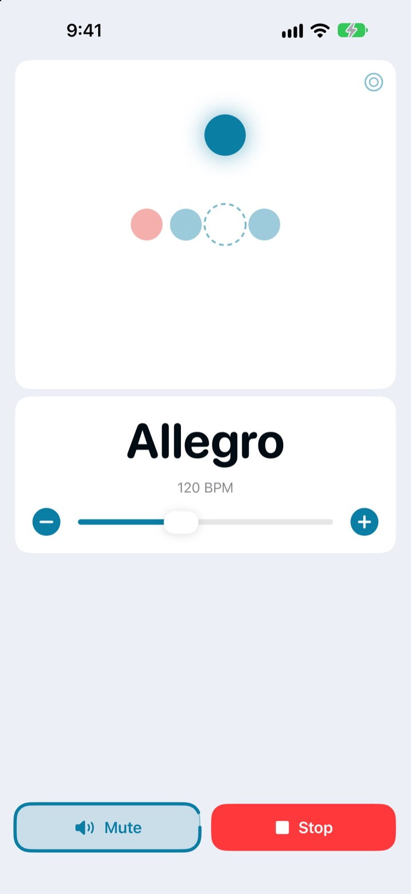
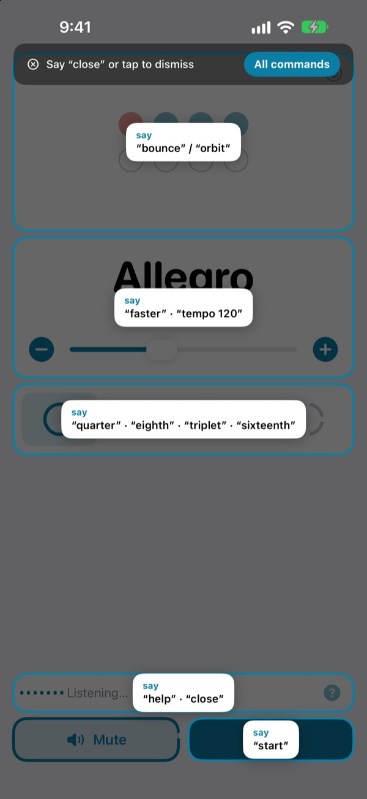
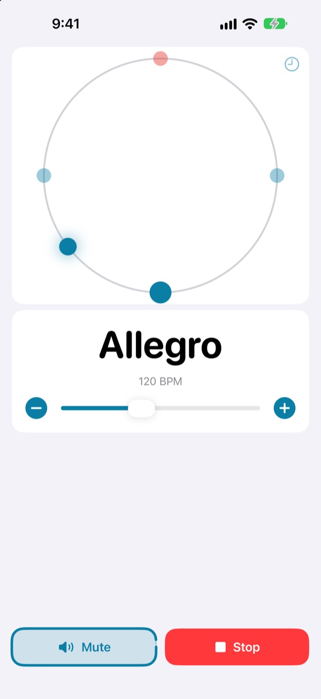
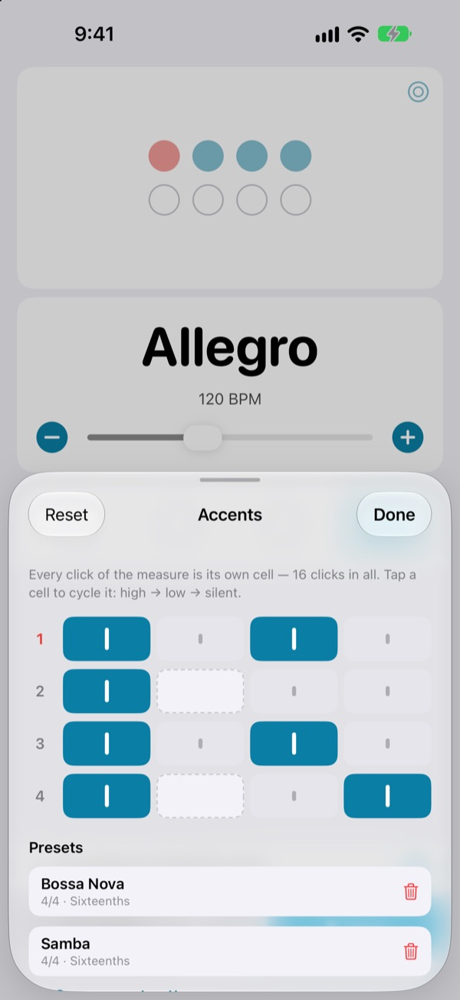

Hands on the instrument.
Tempo by voice.
Say faster mid-phrase and the click speeds up. No reaching for the screen, no stopping to change the tempo.
The full metronome and voice control are free.

Try it out loud
Tap a phrase, or turn on the mic and say it. Turn your volume up, it clicks.
Ever lost the groove just to nudge the tempo?
Put the bow down, clamp the pick in your teeth, tap the screen twice, and the feel you just found is gone. Not My Tempo changes the tempo with a single word, right where you are.
Say it, and it follows
Short English words like start, faster and tempo 120. It listens the moment you open it, with no need to turn on iOS Voice Control or any Accessibility setting.
Forget a command? Say help and every phrase you can use shows up on screen.

See the beat, too
Pick a bouncing ball, an orbit or a ring. Beat one shows in red and clicks louder.
Tap along on the orbit and it shows how close you landed.

Save the accents for every song
Set each click in the bar to high, low or silent, then keep it as a preset. Build the bossa nova or samba pattern once and just pick it next time. (Pro)

Three steps to start
- 1
Open the app
It starts listening right away.
- 2
Allow the mic
It asks for microphone and speech access once.
- 3
Talk or tap
Every command also has an on-screen control.
What you can say
- start · stop
- play, pause
- faster · slower
- up or down 5 BPM
- up · down
- up or down 1 BPM
- tempo 120
- jump straight to a tempo
- double · half
- twice as fast, half as fast
- three beats
- change the meter
- quarter · eighth · triplet · sixteenth
- subdivide the beat
- louder · quieter · mute
- click volume
- volume 60
- set the volume in percent
- bounce · orbit
- switch the beat view
- timer 5 minutes
- set a practice timer
- practice
- climb the tempo as you drill (Pro)
- tune
- open the tuner (Pro)
- help
- show every command
- close · done
- close a panel
Voice recognition runs in US English. Every command also works by tapping.
The metronome is free. Pro is there when you want more.
Free
- Every voice command
- Meters from 1 to 8, with an accented beat one
- Quarter, eighth, triplet and sixteenth subdivisions
- Bounce, orbit and ring views
- Tap tempo and timing check
- Practice timer
Not My Tempo Pro
- Practice mode: adds a few BPM every few bars until you hit your target
- Accent editor with presets per song
- Chromatic tuner
Yearly with a free trial, or a one-time lifetime purchase
Voice control and accessibility features stay free for everyone. Bought the app before Pro existed? Every Pro feature is already yours.
Questions
Which language do I speak?
Voice recognition runs in US English, so commands are short English words like start and faster. The rest of the app is in your language, and every command also works by tapping.
It isn't hearing me.
Check that the mic status reads Listening. If it's off, tap Listen. In a noisy room or on loudspeakers, use earphones so the click doesn't leak into the mic.
Listening turned itself off.
To save battery, listening switches off after a few minutes without a command. Tap Listen to turn it back on.
The tempo came out half or double.
Say double or half to fix it.
How do I use the tuner?
Say tune or tap the waveform button on the tempo card. Play a note; when the indicator lands in the green zone, you're in tune. Say close to leave.
I already use iOS Voice Control.
Turn the app's own mic off and drive it by button name. Every control has a VoiceOver label.
Is my voice sent anywhere?
No. Speech is recognized on your device and never recorded, stored or uploaded. The metronome, voice control and tuner all work offline.
How do I cancel the subscription?
In Settings > Apple Account > Subscriptions. The yearly plan renews automatically unless you cancel at least 24 hours before the period ends. Lifetime is a single charge.
Questions or feedback? Write to leeo@kakao.com.